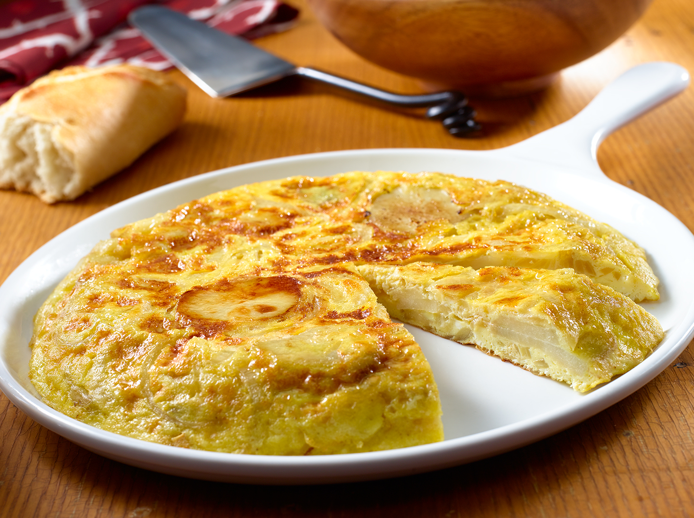
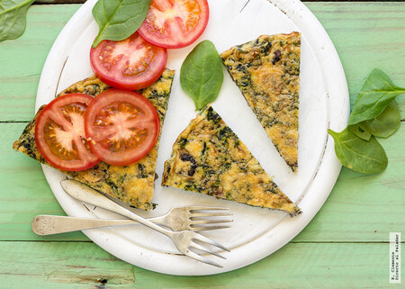
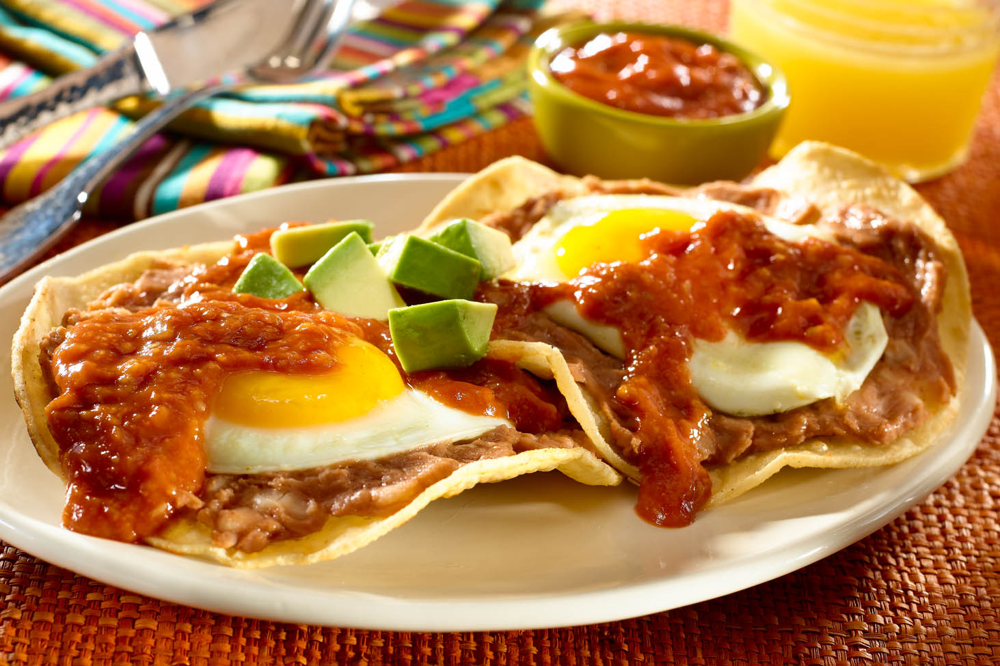

Aprende las bases de la cocina
Cada guía está diseñada para principiantes absolutos. Sin tecnicismos, sin presupuestos altos — solo práctica real desde tu cocina.
 Cena
Cena
Aprende a preparar quesadillas doradas y crujientes rellenas de queso derretido. Descubre cómo cocinarlas correctamente y lograr una comida sencilla, rápida y llena de sabor.

CenaDescubre cómo hacer una tortilla española tradicional utilizando papas, huevos y una cocción sencilla para lograr una textura suave y dorada. Aprende técnicas básicas para cocinarla correctamente.
 Cena
Cena
Aprende a preparar un sándwich caliente de pollo con pan tostado, queso y vegetales frescos. Descubre combinaciones fáciles y técnicas simples para obtener una comida rápida y deliciosa.

CenasDescubre cómo cocinar una frittata suave y esponjosa utilizando queso y espinaca fresca. Aprende a combinar los ingredientes y lograr una comida nutritiva y fácil de preparar.
 Almuerzos
Almuerzos
Prepara una quesadilla rellena de pollo sazonado y queso derretido utilizando tortillas doradas y crujientes. Aprende a combinar ingredientes simples para crear una comida práctica y deliciosa.

DesayunosAprende a preparar huevos rancheros tradicionales con tortillas, salsa y huevos cocinados al gusto. Descubre cómo combinar sabores caseros y crear un desayuno lleno de energía y sabor.